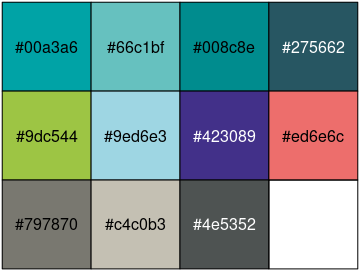

InraeThemes is a collection of R-related templates, themes, and other graphical elements based on formats related to R and in accordance with the INRAE design system.
The goal of this 📦 is to provide a easy to use themes and color palettes for INRAE engineers and researchers. These are an unofficial and opiniated templates.
Related work
- The quarto-inrae-extension which provides a wide range of quarto-based formats for documents, slides and projects.
Prerequisites
To make the full use of this package, you will need 2 fonts defined in INRAE’s design system : Raleway and Avenir Next Pro Cn that can be downloaded here
Installation
The package can be installed using:
# install.packages("remotes")
remotes::install_github("davidcarayon/InraeThemes")Note: Older versions with Rmarkdown templates (i.e., 1.0.1) can still be downloaded using:
# install.packages("remotes") remotes::install_github("davidcarayon/InraeThemes@v1.0.1")
Colors
A color palette is available in this package, based on INRAE’s design system

ggplot2 themes and scales
Customize your ggplots using INRAE’s colors with theme_inrae() and/or scale_<fill/color>_inrae().
Here are examples using the iris dataset.
library(InraeThemes)
library(ggplot2)
# If needed
sysfonts::font_add_google("Raleway")
# Load the fonts
showtext::showtext_auto()
# Load data
data(iris)
# The plot
ggplot(data = iris, aes(x = Sepal.Length, y = Petal.Length, group = Species)) +
geom_point(aes(color = Species, shape = Species), size = 3, alpha = 0.8) +
geom_smooth(method = "lm", se = FALSE, aes(color = Species)) +
scale_color_inrae() +
labs(
title = "Iris dimensions",
subtitle = "This is a subtitle explaining what you can see in this plot",
x = "Sepal Length",
y = "Petal Length",
color = "Iris species",
shape = "Iris species"
) +
theme_inrae()
ggplot(data = iris, aes(x = Sepal.Width)) +
geom_histogram(aes(fill = Species), alpha = 0.5, position = "identity") +
scale_fill_inrae() +
labs(x = "Sepal Width", y = "Frequency", title = "Sepal Width distribution") +
theme_inrae()
Bootstrap theme
This package also provides a Sass theme built with {bslib}: bs_inrae(). Preview the theme with:
bslib::bs_theme_preview(bs_inrae())
And can be used in any Shiny app with :
ui <- fluidPage(
theme = InraeThemes::bs_inrae(),
...
)Project templates
This package provides an opinionated project directory structure for data analysis which can be either used by going though Projects > New Project > New Directory in Rstudio or by using :
new_analysis("myproj")